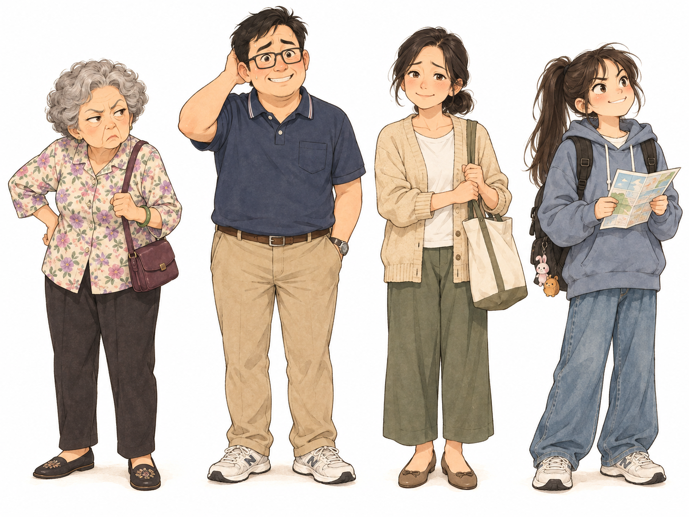
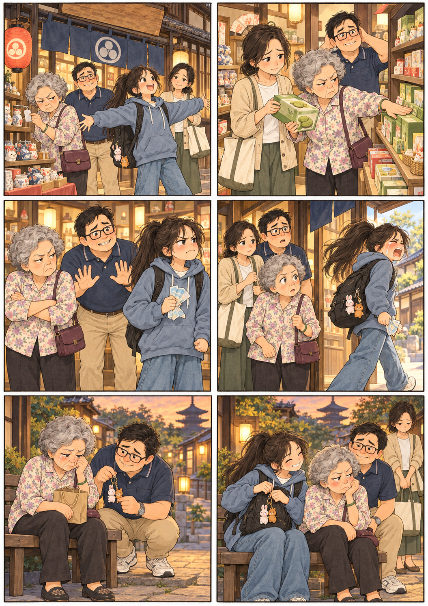
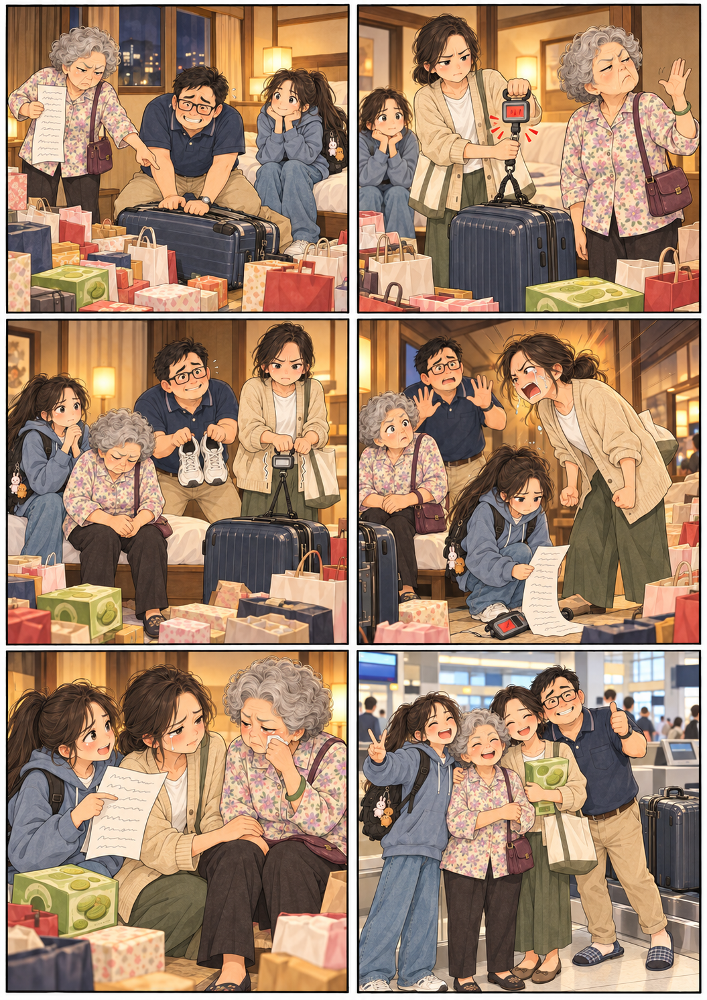

家族旅遊短劇：早知道就出門了
劇組介紹
劇名：早知道就出門了
成員：凱莉、雅典娜、冠豪、鈺庭
阿明的媽媽，第一次出國，不會說好聽話，只想著省錢。
阿嬤的兒子，媽媽跟老婆兩邊都不敢得罪，夾在中間負責打圓場，只敢默默犧牲。
有自己的想法，怕婆婆生氣、讓老公為難，以大局為重的媳婦，但忍耐到最後大爆發。
阿嬤的孫女，對行程最了解，很興奮帶領家人出遊，覺得長輩只會嫌。
故事大綱
三代同堂第一次全家出門旅遊，孫女小瑜很興奮，事先查了排行程，阿嬤卻整趟旅程一直嫌，導致中間爆發祖孫衝突、婆媳衝突與兒子忙著打圓場等情形。
旅途中出現一些意外，讓每個人重新檢視彼此說不出口的重視與愛，並在旅途尾聲開始互相逗趣，溫馨收場。
核心宗旨
不同世代之間愛的表達方式需要用心感受與聆聽：是拒絕，還是不會說出口的愛？
分幕設定
| 幕 1 | 幕 2 | 幕 3 | 幕 4 | 幕 5 | |
|---|---|---|---|---|---|
| 主題 | 不要吵架的宣誓 | 阿嬤不讓買，大家不滿（但阿嬤有買大家想要的東西） | 各自分開購物 | 大家一起吃飯 | 收行李 |
| 中心人物 | 孫女 | 阿嬤 | 阿嬤、兒子 | 阿嬤 | 阿嬤、媳婦 |
| 地點 | 飯店 check-in 櫃檯 | 商店 A | 商店 B | 餐廳 | 飯店房間 |
| 衝突 | 無，埋宣誓的伏筆 | 阿嬤一直嫌每個想買東西的人 | 阿嬤硬要扛重物結果扭傷腳 | 阿嬤嫌貴、嫌少、嫌不營養、嫌沒有自己煮的好吃 | 媳婦發現阿嬤買太多，行李超重 |
| 道具 | 行李箱、斜背包、後背包；手一直維持推行李箱的姿勢 | 可愛小物（象徵大家想買的東西） | 很多包很重的袋狀物（日本米） | 椅子，假裝吃飯 | 可愛小物、日本米 |
| 動作 | 孫女去旁邊領房卡，其他人在中央等她回來宣誓 | 自拍動作帶出已在景點中 | 阿嬤抱米，腳一拐坐倒 | 大家一起進入坐下，作勢吃飯 | 孫女爆發，爸爸制止，媳婦跟著爆發，阿嬤才拿出大家想買的東西 |
| 時間 | 約 1 分 | 約 1 分半 | 約 1 分半 | 約 1 分半 | 約 2 分 |
完整台詞
阿嬤的口頭禪是「好貴喔」「台灣也有」「早知道就不出門了」。幕 1 的三句宣誓會在後面被一一打破，幕 2 偷買的小物在幕 5 揭露。
幕 1 不要吵架的宣誓 飯店 check-in 櫃檯 · 約 1 分鐘
［四人推行李箱進場，手保持推行李箱的姿勢。小瑜揹後背包，淑芬斜背包。］
小瑜（興奮）到了到了！這家飯店我比價比了三個禮拜，離車站走路五分鐘！
阿嬤（看四周）這麼大間……好貴喔。
阿明媽，小瑜找的是特價的啦。
小瑜我去領房卡，你們在這邊等我，不要亂跑！（跑到旁邊）
淑芬（小聲對阿明）你媽才下飛機就開始了……
阿明（小聲）忍一下，才第一天。
阿嬤（自言自語）飛機坐那麼久，腰都痠了，早知道就不出門了。
小瑜（跑回來，舉房卡）房卡拿到了！進房間之前，大家舉右手，跟我唸：這五天，不吵架。
全家（有氣無力）這五天，不吵架。
小瑜不嫌貴。
阿嬤……（不唸）
小瑜阿嬤！
阿嬤（勉強）不嫌貴。
小瑜有事情要說出來，不要憋在心裡。
全家有事情要說出來，不要憋在心裡。
小瑜好！出發！
阿嬤（推行李走，小聲）好貴喔……
小瑜阿嬤！
阿嬤我說好累喔！
［燈暗］
幕 2 阿嬤不讓買 商店 A · 約 1 分半
［景點前，小瑜拿手機自拍。］
小瑜大家靠近一點，三、二、一……（看手機）欸，後面那間就是我說的店！進去進去！
［進店，可愛小物擺在中間。］
淑芬（拿起一個）這個好可愛，拿回去放辦公室……
阿嬤（伸手按住）台灣也有啦，夜市一個五十塊。
淑芬（放下）……好。
阿明（拿起另一個）這個給我同事……
阿嬤你同事有給你什麼嗎？放下。
阿明（放下）好。
小瑜（舉起一個）阿嬤，這個是這裡限定的欸，台灣真的沒有。
阿嬤（看價錢）好貴喔！這個錢可以買幾斤米你知道嗎？
小瑜阿嬤你今天早上才宣誓不嫌貴！
阿嬤我沒有嫌，我是在算。
小瑜（放下，轉身）算了，我去外面等。
淑芬（跟著）我也去。
阿明（看著阿嬤）媽……
阿嬤你也去！在這裡看著我幹嘛。
［三人出場。阿嬤左右看一下，把三個小物一口氣拿起來，走向櫃檯，壓低聲音。］
阿嬤這三個……袋子要不透明的。
［燈暗］
幕 3 各自分開購物 商店 B · 約 1 分半 · 阿嬤與兒子
［淑芬和小瑜分頭去逛。阿嬤和阿明在超市，架上一袋袋日本米。］
阿明媽，妳要買米？台灣也有米欸。（學阿嬤的語氣）
阿嬤你懂什麼，這個米你三姑說很好吃。一包給三姑，一包給隔壁陳太太，一包給廟裡師姐……
阿明媽，一包五公斤，妳要買四包？誰扛？
阿嬤我扛。我以前菜市場一天扛幾十斤。
阿明那是四十年前！
阿嬤（抱起兩袋）看，很輕。
［阿嬤走兩步，腳一拐，坐倒在地。］
阿嬤哎喲……
阿明（衝過去）媽！妳怎樣！
阿嬤沒事沒事，腳扭一下而已。不要跟她們講。
阿明怎麼不講！妳腳都腫了！
阿嬤講了小瑜又要說我拖累大家。我來就是給你們添麻煩，早知道就不出門了。
阿明（蹲下扶她的腳，停一下）媽，妳買米是要送人，那妳自己呢？妳有想要什麼嗎？
阿嬤我老了，用不到。
阿明（嘆氣，把米全部扛到自己肩上，再扶起阿嬤）那我扛米，妳扛我。
阿嬤你扛得動？
阿明我是妳兒子欸，一天扛幾十斤。
［阿明一手扛米、一手扶阿嬤慢慢走出。燈暗］
幕 4 大家一起吃飯 餐廳 · 約 1 分半
［四張椅子，大家坐下作勢吃飯。阿嬤的腳墊高，阿明不停偷看她的腳。］
小瑜這家是排隊名店，我一個月前就訂了！
淑芬（看菜單）一人一份套餐……
阿嬤（看價錢）一份這麼多錢？好貴喔。
小瑜阿嬤……
阿嬤我沒有嫌，我是在算。
［假裝上菜，大家作勢吃。］
阿嬤（看盤子）這麼少？這是給貓吃的喔？
阿明媽，這叫精緻。
阿嬤精緻就是少。（夾一口）又沒有菜，都是肉，不營養。
淑芬（忍著）媽，很好吃啊。
阿嬤（再吃一口，停一下）……沒有我煮的好吃。
小瑜阿嬤！妳什麼都嫌，那妳來幹嘛？
［安靜。］
阿明小瑜，講話客氣一點。
小瑜（低頭）……對不起。
阿嬤（慢慢說）我煮了四十年，你們以前每個禮拜天都回來吃。現在一年吃不到幾次。（看著盤子）這個是不錯啦……就是沒有人跟我說想吃什麼了。
［淑芬放下筷子看阿嬤，阿明看淑芬，小瑜看著盤子。］
小瑜（小聲）阿嬤，回去我要吃妳的滷肉。
阿嬤好貴喔，豬肉漲價了。（停）……煮啦。
［燈暗］
幕 5 收行李 飯店房間 · 約 2 分鐘 · 阿嬤與媳婦
［地上攤滿袋子：米、小物。阿明跪著壓行李箱，淑芬拿磅秤。］
淑芬（看磅秤）超重六公斤。超重一公斤要加好幾百。
阿嬤好貴喔，那你們衣服少帶幾件。
淑芬（咬牙）媽，衣服是要穿的。
阿嬤米也是要吃的！
阿明不然……我的鞋子不要帶好了。
小瑜（爆發）夠了！阿嬤妳從第一天嫌到最後一天！我們不能買、不能吃、不能拍照，然後妳自己買四包米！我查三個月的行程，妳有哪一天開心過？
阿明（站起來）小瑜！妳怎麼跟阿嬤講話的！她腳還在痛！
小瑜腳痛？（看阿嬤的腳）什麼時候的事？為什麼沒人跟我說？
阿嬤（低頭）……我叫阿明不要講。
淑芬（聲音發抖）媽。我忍了五天。小瑜查三個月，我跟阿明加班一年存這趟錢。妳嫌貴、嫌少、嫌不好吃，連腳受傷都不跟我們講。妳是不是覺得我們做什麼都不夠好？
［安靜。阿明僵住不敢動。］
阿嬤（很久）……不是。
［阿嬤慢慢從行李箱底下拉出不透明袋子，倒出三個小物，一個一個推過去。］
阿嬤這個，妳放辦公室的。這個，阿明給同事的。這個……（推給小瑜）這裡限定的，台灣真的沒有。
小瑜（愣住）阿嬤……妳那天……
阿嬤我不會講好聽話，我只會算。我沒賺錢了，怕你們為了我花錢，所以我自己買。（看淑芬）妳做的我都有看到。我不是嫌你們，我是嫌我自己沒用。
淑芬（蹲下，手搭在阿嬤膝蓋上）媽，妳在，就不是沒用。
阿明（終於敢動）那……米還是超重。
阿嬤那你鞋子不要帶。
阿明媽！
［全家笑。］
小瑜（舉右手）好，最後一次宣誓。跟我唸：下次……
阿嬤下次早點出門，才能逛久一點。
小瑜咦？
阿嬤怎樣，我不能說喔？好貴喔……但值得。
淑芬（接）好貴喔。
阿明好貴喔。
小瑜（笑）好貴喔！
［全家擠在一起拍合照，阿嬤站中間。燈暗］
演出提醒
- 三句宣誓是全劇的骨架：幕 1 立下「不吵架、不嫌貴、有事說出來」，幕 2 破「不嫌貴」，幕 4 破「不吵架」，幕 5 破「有事說出來」，最後由阿嬤自己完成第三句。
- 幕 3 是唯一沒有人吵架的一幕：只有阿嬤和阿明，先讓觀眾看到阿嬤柔軟的一面，幕 5 的揭露才不突兀。
- 腳傷分兩層揭露：幕 4 用「腳墊高、阿明偷看」默默帶過，幕 5 小瑜才發現，製造第二層衝擊。
- 口頭禪前刺後暖：「好貴喔」在幕 1 到幕 4 是刺，幕 5 最後一輪變成全家的笑話，演阿嬤的人要刻意換語氣。
- 揭露靠物件：不透明袋子裡的三個小物要讓觀眾看得清楚，是誰想買的就推給誰，不要只靠台詞解釋。
角色圖
角色設定圖由 ChatGPT 生成。下面兩張六格漫畫是 v1 的十二格分鏡版本，角色與氛圍相同，可當排練時的視覺參考。


